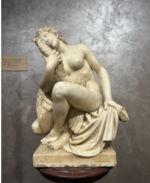

Audio Explanation
Leda and the Swan

লেডা ও রাজহাঁস (XLV - 17) এই মার্বেল ভাস্কর্যটিতে গ্রীক পৌরাণিক কাহিনীর একটি বিখ্যাত গল্প, লেডা এবং রাজহাঁসকে ফুটিয়ে তোলা হয়েছে। এই উপাখ্যানে, দেবতা জিউস একটি রাজহাঁসের রূপ ধারণ করে লেডার কাছে আসেন। ভাস্কর্যটিতে লেডাকে একটি মৃদু ও স্বস্তিদায়ক ভঙ্গিতে বসে থাকতে দেখা যায়, যিনি রাজহাঁসটিকে নিজের খুব কাছে ধরে আছেন। তাঁর শরীরটি নমনীয়ভাবে বাঁকানো এবং মাথাটি রাজহাঁসের গায়ে অত্যন্ত স্নেহের সাথে হেলানো রয়েছে, যা তাদের অন্তরঙ্গতা ও আবেগকে প্রকাশ করে। মসৃণ মার্বেল পৃষ্ঠ এবং পালক ও পরিচ্ছদের নিখুঁত খোদাই কাজ ভাস্কর্যটির উচ্চ দক্ষতার পরিচয় দেয়। এই কাজটি প্রাচীন গ্রীক থিমের একটি অনুলিপি, যা ঐতিহ্যগতভাবে ভাস্কর টিমোথিসের নামের সাথে যুক্ত। ক্লাসিক্যাল শিল্পে এই বিষয়টি বেশ জনপ্রিয় ছিল কারণ এটি পৌরাণিক কাহিনী, সৌন্দর্য এবং মানুষের আবেগকে একত্রিত করে।
Leda and the Swan
लेडा और हंस (XLV - 17) यह संगमरमर की मूर्ति लेडा और हंस को दर्शाती है, जो ग्रीक (यूनानी) पौराणिक कथाओं की एक प्रसिद्ध कथा है। इस कथा के अनुसार, देवता ज़्यूस स्वयं को हंस के रूप में परिवर्तित कर लेडा के पास आते हैं। मूर्ति में लेडा को एक सहज और शांत मुद्रा में बैठे हुए दिखाया गया है। वह हंस को अपने पास थामे हुए हैं। उनके शरीर की कोमल वक्रता और हंस के प्रति झुका हुआ सिर आत्मीयता और भावनात्मक निकटता को व्यक्त करता है। संगमरमर की चिकनी सतह तथा पंखों और वस्त्रों की बारीकी से की गई नक्काशी मूर्तिकार की उच्च कोटि की शिल्पकला को दर्शाती है। यह कृति एक प्राचीन यूनानी विषय की प्रतिकृति है, जिसका पारंपरिक रूप से संबंध मूर्तिकार टिमोथियस से माना जाता है। शास्त्रीय कला में यह विषय अत्यंत लोकप्रिय रहा है, क्योंकि इसमें पौराणिक कथा, सौंदर्य और मानवीय भावनाओं का सुंदर समन्वय दिखाई देता है।
Leda and the Swan
ಲೀಡಾ ಮತ್ತು ಹಂಸ (XLV-17) ಈ ಮಾರ್ಬಲ್ (ಅಮೃತಶೀಲೆ) ಶಿಲ್ಪ ಕಲಾಕೃತಿಯು ಗ್ರೀಕ್ ಪುರಾಣದ ಪ್ರಸಿದ್ಧ ಕಥೆಯಾದ 'ಲೀಡಾ ಮತ್ತು ಹಂಸ'ವನ್ನು ಚಿತ್ರಿಸುತ್ತದೆ. ಈ ಕಥೆಯಲ್ಲಿ, ಜ್ಯೂಸ್ ದೇವನು ತಾನೇ ಹಂಸವಾಗಿ ರೂಪಾಂತರಗೊಂಡು ಲೀಡಾಳನ್ನು ಸಮೀಪಿಸುತ್ತಾನೆ. ಈ ಶಿಲ್ಪ ಕಲಾಕೃತಿಯಲ್ಲಿ ಲೀಡಾಳು ಹಂಸವನ್ನು ತನ್ನ ಹತ್ತಿರ ಹಿಡಿದುಕೊಂಡು, ಶಾಂತ ಹಾಗೂ ವಿಶ್ರಾಂತ ಭಂಗಿಯಲ್ಲಿ ಕುಳಿತಿರುವುದನ್ನು ಕಾಣಬಹುದು. ಆಕೆಯ ದೇಹವು ಮೃದುವಾದ ಬಾಗುವಿಕೆಯನ್ನು ಹೊಂದಿದ್ದು, ಆಕೆಯು ಹಂಸಕ್ಕೆ ಪ್ರೀತಿಯಿಂದ ತನ್ನ ತಲೆಯನ್ನು ಒರಗಿಸಿರುವುದು, ಆಪ್ತತೆ ಮತ್ತು ಭಾವನೆಯನ್ನು ಪ್ರದರ್ಶಿಸುತ್ತದೆ. ಮೃದುವಾದ ಮಾರ್ಬಲ್ ಮೇಲ್ಮೈ ಹಾಗೂ ಗರಿಗಳು ಮತ್ತು ವಸ್ತ್ರವಿನ್ಯಾಸದ ಸೂಕ್ಷ್ಮ ಕೆತ್ತನೆಯು ಶಿಲ್ಪಿಯ ಉನ್ನತ ಕೌಶಲ್ಯವನ್ನು ತೋರಿಸುತ್ತದೆ. ಈ ಕಲಾಕೃತಿಯು ಸಾಂಪ್ರದಾಯಿಕವಾಗಿ 'ತಿಮೋಥಿಯಸ್' ಎಂಬ ಶಿಲ್ಪಿಗೆ ಸಂಬಂಧಿಸಿದ ಪ್ರಾಚೀನ ಗ್ರೀಕ್ ವಸ್ತುವಿಷಯದ ನಕಲಾಗಿದೆ. ಪೌರಾಣಿಕತೆ, ಸೌಂದರ್ಯ ಮತ್ತು ಮಾನವ ಭಾವನೆಗಳನ್ನು ಒಟ್ಟಾಗಿ ಸಂಯೋಜಿಸುವುದರಿಂದ ಈ ವಸ್ತುವಿಷಯವು/ಕಲಾಕೃತಿಯು ಶಾಸ್ತ್ರೀಯ ಕಲೆಯಲ್ಲಿ ಅತ್ಯಂತ ಜನಪ್ರಿಯವಾಗಿತ್ತು.
Leda and the Swan
ലെഡയും അരയന്നവും (XLV-17) ഈ മാർബിൾ ശില്പം ഗ്രീക്ക് പുരാണത്തിലെ പ്രശസ്തമായ കഥയായ ലെഡയെയും അരയന്നത്തെയും കാണിക്കുന്നു. ഈ കഥയിൽ, സിയൂസ് ദേവൻ സ്വയം ഒരു അരയന്നമായി മാറുകയും ലെഡയെ സമീപിക്കുകയും ചെയ്യുന്നു. മിനുസമാർന്ന മാർബിൾ ഉപരിതലവും തൂവലുകളുടെയും വസ്ത്രങ്ങളുടെയും വിശദമായ കൊത്തുപണികളും ശിൽപിയുടെ മികച്ച വൈദഗ്ദ്ധ്യം കാണിക്കുന്നു. ഈ കൃതി, പുരാതന ഗ്രീക്ക് ശില്പിയായ ടിമോതെസുമായി പരമ്പരാഗതമായി ബന്ധപ്പെട്ടിരിക്കുന്ന ഒരു പഴയ ഗ്രീക്ക് പ്രമേയത്തിന്റെ പകർപ്പാണ്. പുരാണങ്ങൾ, സൗന്ദര്യം, മാനുഷിക വികാരങ്ങൾ എന്നിവ ഒരേസമയം സംയോജിപ്പിക്കുന്നതിനാൽ ഈ വിഷയം ക്ലാസിക്കൽ കലയിൽ വളരെ ജനപ്രിയമായിരുന്നു.
Leda and the Swan
ଲେଡା ଆଣ୍ଡ୍ ଦ ସ୍ୱାନ୍ (XLV-17) ଆସନ୍ତୁ, ଏହି ଚମତ୍କାର ମାର୍ବଲ ମୂର୍ତ୍ତିଟିକୁ ନିକଟରୁ ଦେଖିବା—ଏହା ହେଉଛି 'ଲେଡା ଆଣ୍ଡ୍ ଦ ସ୍ୱାନ୍'। ଏହି ମୂର୍ତ୍ତିଟି ଗ୍ରୀକ୍ ପୁରାଣର ଏକ ଅତ୍ୟନ୍ତ ପ୍ରସିଦ୍ଧ ଆଖ୍ୟାୟିକାକୁ ଜୀବନ୍ତ ଭାବେ ପ୍ରଦର୍ଶିତ କରୁଛି। କାହାଣୀ ଅନୁସାରେ, ଗ୍ରୀକ୍ ଦେବତା ଜିଉସ୍ ଏକ ରାଜହଂସ ରୂପ ଧାରଣ କରି ଲେଡାଙ୍କ ନିକଟକୁ ଆସିଥିଲେ। ଆପଣ ଯଦି ମୂର୍ତ୍ତିଟିକୁ ଲକ୍ଷ୍ୟ କରିବେ, ଦେଖିପାରିବେ ଲେଡା କିପରି ଅତ୍ୟନ୍ତ ଶାନ୍ତ ଓ କୋମଳ ଭଙ୍ଗୀରେ ବସି ହଂସଟିକୁ ଆଲିଙ୍ଗନ କରିଛନ୍ତି। ତାଙ୍କ ଶରୀରର ସୁନ୍ଦର ଆବେଗ ଏବଂ ହଂସକୁ ଆଉଜି ରହିଥିବା ମସ୍ତକ ଗଭୀର ଆତ୍ମୀୟତା ଓ ଭାବପ୍ରବଣତାକୁ ପ୍ରକାଶ କରୁଛି। ମାର୍ବଲ ପଥରର ଏହି ମସୃଣତା, ହଂସର ପରଗୁଡ଼ିକର ଜୀବନ୍ତ ଖୋଦେଇ ଏବଂ ବସ୍ତ୍ରର ସୂକ୍ଷ୍ମ ସୌନ୍ଦର୍ଯ୍ୟ ଶିଳ୍ପୀଙ୍କ ଅସାଧାରଣ ଦକ୍ଷତାର ପ୍ରମାଣ ଦିଏ। ଏହି କଳାକୃତିଟି ପ୍ରାଚୀନ ଗ୍ରୀକ୍ ଭାସ୍କର ତିମୋଥିଅସ୍ଙ୍କ ଶୈଳୀର ଏକ ପ୍ରତିଲିପି। ପୌରାଣିକ କାହାଣୀ, ରୂପଗତ ସୌନ୍ଦର୍ଯ୍ୟ ଏବଂ ମାନବୀୟ ଆବେଗର ଏକ ଅପୂର୍ବ ସମାହାର ହୋଇଥିବାରୁ ଏହି ବିଷୟବସ୍ତୁଟି ପାରମ୍ପରିକ କଳାରେ ଅତ୍ୟନ୍ତ ଲୋକପ୍ରିୟ।
Leda and the Swan
லேடா மற்றும் அன்னப்பறவையும் (XLV-17) இந்த பளிங்கு சிற்பம் கிரேக்க புராணங்களின் புகழ்பெற்ற கதையான லெடா மற்றும் அன்னப்பறவை பற்றிய நிகழ்வைச் சித்தரிக்கிறது. இந்தக் கதையில், ஜீயஸ் கடவுள் தன்னை ஒரு அன்னமாக மாற்றி, லேடாவை அணுகினார். இச்சிற்பத்தில் லேடா அமைதியான, இயல்பான கோலத்தில் அமர்ந்து, அன்னப்பறவையைத் தன்னோடு அணைத்து வைத்திருப்பது போலக் காட்சிப்படுத்தப்பட்டுள்ளார். அவரது உடலின் மென்மையான வளைவுகளும், அன்னப்பறவையின் மீது அவர் தனது தலையை அன்போடு சாய்த்திருக்கும் விதமும், அவர்களுக்கு இடையேயான நெருக்கத்தையும் உணர்ச்சியையும் வெளிப்படுத்துகின்றன. பளிங்கின் வழவழப்பான மேற்பரப்பிலும், அன்னப்பறவையின் இறகுகள் மற்றும் ஆடையமைப்பில் காணப்படும் நுணுக்கமான செதுக்கல்களிலும் சிற்பியின் உயர்ந்த கலைத்திறன் வெளிப்படுகிறது. இச்சிற்பம், திமோத்தியஸ் என்ற சிற்பியுடன் பாரம்பரியமாகத் தொடர்புபடுத்தப்படும் பண்டைய கிரேக்கக் கலை அடிப்படையில் உருவாக்கப்பட்ட பிரதியாகும். புராணக் கதை, அழகியல் மற்றும் மனித உணர்வுகளை ஒருங்கிணைத்துள்ளதால், இக்கரு செவ்வியல் கலைப்பாடுகளில் பரவலாக இடம்பெற்றுள்ளது.
Leda and the Swan
లేడా మరియు హంస (XLV-17) ఈ పాలరాతి శిల్పం, గ్రీకు పురాణాలలోని ఒక ప్రసిద్ధ కథ అయిన 'లేడా మరియు హంస'ను చిత్రిస్తుంది. ఈ కథలో, జీయస్ దేవుడు లేడాను చూడటానికి హంసగా మారుతాడు. ఈ విగ్రహంలో లేడా ప్రశాంతంగా, సౌకర్యవంతంగా కూర్చుని, హంసను తన దగ్గరకు హత్తుకుని ఉన్నట్లుగా చిత్రీకరించబడింది. ఆమె శరీరం సున్నితంగా వంగి ఉంది, మరియు ఆమె తల హంసపై ఆప్యాయంగా ఆనించి ఉంది, ఇది అనురాగాన్ని మరియు భావోద్వేగాన్ని తెలియజేస్తుంది. నునుపైన పాలరాతి ఉపరితలం మరియు ఈకలు, దుస్తులపై ఉన్న క్లిష్టమైన చెక్కడాలు శిల్పి యొక్క ఉన్నత నైపుణ్యాన్ని ప్రదర్శిస్తాయి. ఈ కళాఖండం, సాంప్రదాయకంగా శిల్పి తిమోతియస్తో ముడిపడి ఉన్న ఒక పురాతన గ్రీకు ఇతివృత్తానికి ప్రతిరూపం. ఈ ఇతివృత్తం పురాణగాథలు, సౌందర్యం మరియు మానవ భావోద్వేగాలను కలిగి ఉన్నందున శాస్త్రీయ కళలో ప్రసిద్ధి చెందింది.
Leda and the Swan
لیڈا اور ہنس (XLV-17) اس سنگ مرمر کے مجسمے میں لیڈا اور ہنس کو دکھایا گیا ہے، جو یونانی دیومالا کی ایک مشہور کہانی سے تعلق رکھتے ہیں۔ اس کہانی کے مطابق دیوتا زیوس ہنس کا روپ دھار کر لیڈا کے پاس آتا ہے۔ مجسمے میں لیڈا کو ایک نرم اور پُرسکون انداز میں بیٹھی ہوئی دکھایا گیا ہے۔ وہ ہنس کو اپنے قریب تھامے ہوئے ہے۔ اس کے جسم میں ہلکا سا خم ہے اور اس کا سر نرمی سے ہنس کے ساتھ ٹکا ہوا ہے، جو ان دونوں کے درمیان قربت اور جذبات کو ظاہر کرتا ہے۔ سنگ مرمر کی ہموار سطح اور پروں اور لباس کی باریک نقش کاری مجسمہ ساز کی اعلیٰ فن کاری کو ظاہر کرتی ہے۔ یہ مجسمہ قدیم یونانی موضوع کی ایک نقل ہے، جسے روایتی طور پر مجسمہ ساز تیموتھیس سے منسوب کیا جاتا ہے۔ یہ موضوع کلاسیکی فن میں مقبول تھا، کیونکہ اس میں دیومالا، حسن اور انسانی جذبات کا خوب صورت امتزاج پایا جاتا ہے۔
Leda and the Swan
लेडा आणि हंस (XLV-17) हे संगमरवरी शिल्प ग्रीक पौराणिक कथांमधील एक प्रसिद्ध कथा, लीडा आणि हंस दर्शवते. या कथेत, झ्यूस देव हंसाचे रूप धारण करतो आणि लीडाजवळ जातो. शिल्पात लीडा एका सौम्य आणि आरामशीर मुद्रेत बसलेली, हंसाला स्वतःजवळ धरून असल्याचे दिसते. तिच्या शरीराला मऊ वक्रता आहे आणि जिव्हाळा व भावना दर्शवत तिचे डोके हंसावर कोमलतेने टेकलेले आहे. संगमरवरी गुळगुळीत पृष्ठभाग आणि पिसे व वस्त्रांचे तपशीलवार कोरकाम शिल्पकाराचे उच्च कौशल्य दर्शवते. ही कृती पारंपारिकपणे शिल्पकार तिमोथिएसशी जोडलेल्या प्राचीन ग्रीक थीमची प्रत आहे. हा विषय शास्त्रीय कलेमध्ये लोकप्रिय होता कारण त्यात पौराणिक कथा, सौंदर्य आणि मानवी भावना एकत्र येतात.
Leda and the Swan
લીડા એન્ડ ધ સ્વાન (XLV - 17) આ સંગરમણર (માર્બલ) શિલ્પ ગ્રીક પૌરાણિક કથાઓની એક પ્રખ્યાત વાર્તા 'લીડા એન્ડ ધ સ્વાન' દર્શાવે છે. આ વાર્તામાં, દેવતા ઝિયુસ પોતાનું રૂપ બદલીને હંસ બને છે અને લીડા પાસે જાય છે. શિલ્પમાં લીડા હંસને પોતાની નજીક પકડીને એક સૌમ્ય અને હળવા મુદ્રામાં બેઠેલી જોવા મળે છે. તેનું શરીર નરમાશથી વળેલું છે, અને તેનું માથું હંસ સામે કોમળતાથી ટેકવાયેલું છે, જે ઘનિષ્ઠતા અને લાગણી દર્શાવે છે. સંગરમણરની લીસી સપાટી અને પીંછા તથા વસ્ત્રોની ઝીણવટભરી કોતરણી શિલ્પકારની ઉચ્ચ કુશળતા દર્શાવે છે. આ કૃતિ પ્રાચીન ગ્રીક વિષયની નકલ છે જે પરંપરાગત રીતે શિલ્પકાર ટિમોથીઝ સાથે જોડાયેલી છે. આ વિષય શાસ્ત્રીય કલામાં લોકપ્રિય હતો કારણ કે તે પૌરાણિક કથા, સૌંદર્ય અને માનવીય લાગણીઓને જોડે છે.